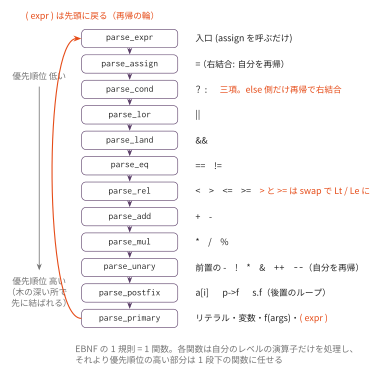
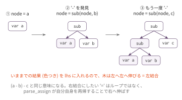

再帰下降パーサ① — 式を解析する
今日のゴール
language_spec.md の式の EBNF と優先順位表を、そのまま関数の階層に展開して、
Core プロファイルの式パーサを自作する。
85本の式コーパスで、AST が スキャフォールド の Parser と完全一致することを golden test で確認する。
この回の位置づけ
| 項目 | 内容 |
|---|---|
| 必須の前提 | F1 |
| 推奨の前提 | — |
| 改変しない | mycc.py、scaffold/（Node と ND_* 定数は ast_def.py から借りる） |
| 編集する | myparser.py |
| 完了条件 | check.py の全 Step が PASS になり、golden.py が85本の式コーパスで AST の完全一致を報告する |
| コマ数 | 1 |
| 備考 | フロントエンド発展シリーズの第2回。sizeof は型のパースが要るので F4 で扱う |
F1 で作ったトークン列を、今度は木にする。F2 は式、F3 で文、F4 で宣言・型を扱い、 F4 の終わりで スキャフォールド の Parser を完全に置き換える。 AST の形は既に決まっている。作るのは「組み立てる側」である。
再帰下降とは — 規則 = 関数
F0 の CYK 法は、どんな文法でも扱える代わりに O(n³) の表を作った。 再帰下降構文解析は、表を作らない。
文法の1規則を1つの関数にする。関数は、自分の規則の形どおりにトークンを読み進め、 対応する部分木を返す。
language_spec.md の式の EBNF は、均質な二項演算子をまとめて1つの規則で与えている。
binary_expr ::= unary_expr { bin_op unary_expr }木の形を決めているのは、この規則ではなく併記された優先順位表である
（高い順に * / %、+ -、< > <= >=、== !=、&&、|| の6段。いずれも左結合）。
再帰下降で書くときは、この表の1行を1つの関数に展開する。展開すると、たとえば
表の上2行はこうなる。
add_expr ::= mul_expr { ('+' | '-') mul_expr }
mul_expr ::= unary_expr { ('*' | '/' | '%') unary_expr }この2行は、そのまま2つの関数 parse_add と parse_mul になる。
「add_expr の中に mul_expr が出てくる」は「parse_add が parse_mul を呼ぶ」に対応する。
表の6段を同じ要領で展開すると、優先順位の低い順に
assign → cond → lor → land → eq → rel → add → mul → unary → postfix → primary
の階段ができる。

各関数は自分のレベルの演算子だけを処理し、それより優先順位の高い部分は
1段下の関数に丸ごと任せる。この構造だけで、1 + 2 * 3 の * が先に結ばれる。
F0 で「優先順位は文法の書き方そのもの」と学んだが、その文法を関数に写した結果が
この階段である。
左結合はループで書く
a - b - c は (a - b) - c でなければならない（左結合）。
これはループで書ける。
def parse_add(self):
"""add_expr ::= mul_expr { ('+' | '-') mul_expr }"""
node = self.parse_mul()
while self.cur.sval in ('+', '-'):
kind = ND_ADD if self.cur.sval == '+' else ND_SUB
self.pos += 1
node = Node(kind, lhs=node, rhs=self.parse_mul())
return nodeEBNF の { ... }（0回以上の繰り返し）が while に、そのまま対応している。

ポイントは lhs=node である。いままでの結果を左の子に入れて、新しい親を作る。
これを繰り返すと木は左へ左へ伸び、左結合になる。
2回書いたら共通化する — parse_binary
parse_add と parse_mul を書き終えると、違いが「演算子の表」と「1段下の関数」
だけであることに気づくはずである。そこで共通部品にまとめる。
def parse_binary(self, op_map, next_fn):
node = next_fn()
while self.cur.sval in op_map:
kind = op_map[self.cur.sval]
self.pos += 1
node = Node(kind, lhs=node, rhs=next_fn())
return node
def parse_land(self):
return self.parse_binary({'&&': ND_AND}, self.parse_eq)残りの二項レベルは、この1行ずつで書ける。
| レベル | op_map |
|---|---|
parse_lor |
{'||': ND_OR} |
parse_land |
{'&&': ND_AND} |
parse_eq |
{'==': ND_EQ, '!=': ND_NE} |
実は スキャフォールド の parser.py もまったく同じ _parse_binary を持っている。
ブラックボックスの中身は、いま自分が書いたものと同じである。
例外が1つ — parse_rel の swap
比較のレベルだけは parse_binary で書けない。
コマ4 の資料に「ND_GT や ND_GE は AST に現れない」とあったのを覚えているだろうか。
その正体がここにある。
if op == '>':
node = Node(ND_LT, lhs=rhs, rhs=node) # a > b は b < a として作る> と >= は、左右の子を入れ替えて Lt / Le に正規化する。
こうしておくと、コード生成側は Lt と Le の2種類だけ扱えばよくなる。
「パーサで形を揃えて、後段を楽にする」という設計判断が AST に刻まれている例である。
単項と代入は「再帰」で書く
前置演算子は自分自身を再帰する。- - x が (neg (neg x)) になる。
def parse_unary(self):
if self.consume_if('-'):
return Node(ND_NEG, operand=self.parse_unary())
...
return self.parse_postfix()代入は右結合なので、ループではなく再帰で右へ伸ばす。
a = b = c は (assign a (assign b c)) である。
def parse_assign(self):
node = self.parse_cond()
if self.consume_if('='):
return Node(ND_ASSIGN, lhs=node, rhs=self.parse_assign()) # 右結合
return node仕様の EBNF は unary_expr '=' assign_expr なのに、なぜ cond まで読むのか。
cond_expr（その中の binary_expr）は unary_expr を含むので、「先に cond まで
読んでしまい、= が来たらそれを代入の左辺とみなす」ことができる。
1 + 2 = x のような不正な左辺はこの段階では通ってしまうが、
左辺が lvalue かどうかの検査は意味解析（codegen_lval）に任せる —
EBNF の注釈「lvalue 制約は意味解析フェーズで検査」の実装がこれである。
値を持つ if — parse_cond（三項演算子）
cond_expr ::= binary_expr [ '?' expr ':' cond_expr ] は、assign と、二項演算子表を
展開した最上段（lor）の間に挟まる新しいレベルである。コマ4 で「文の if / 値を持つ式の ?:」として
導入した三項演算子は、ここで木になる。
def parse_cond(self):
node = self.parse_lor()
if self.consume_if('?'):
then = self.parse_expr() # then 側は expr 全体(assign も含められる)
self.expect(':')
else_ = self.parse_cond() # else 側だけ再帰 — 右結合
return Node(ND_COND, cond=node, then=then, else_=else_)
return node'?' がなければ、いつもどおり1段下（parse_lor）の結果をそのまま返す
——これも「素通し」の一種である。else_ 側だけ parse_cond を再帰しているのが
ポイントで、a ? b : c ? d : e が (ternary a b (ternary c d e)) という
右結合の木になる（then 側は parse_expr で読むため、そちらは代入も許される）。
後置はループで連なる — postfix
p->next->val や a[i][j] は、primary の結果に後置が左から積み重なる。
(member "->" "val" (member "->" "next" (var "p")))後置がある限り回るループで、[ expr ] は ND_INDEX、
-> と . は ND_MEMBER（is_arrow で区別）を作る。
いままでの結果を子に入れて新しい親を作る点は、左結合ループと同じ形である。
primary — 再帰の輪が閉じる
最下段の parse_primary は、リテラル・変数・関数呼び出し・カッコを扱う。
| 現在のトークン | 作るもの |
|---|---|
TK_NUM / TK_CHAR |
Node(ND_NUM, val=...) |
TK_STR |
Node(ND_STR, sval=...) |
TK_IDENT のあとに ( |
Node(ND_CALL, name=..., args=[...]) |
TK_IDENT |
Node(ND_VAR, name=...) |
( |
parse_expr() を読んで ) を expect |
( expr ) で一番下の関数が一番上の関数を呼び戻す。
図の再帰の輪がここで閉じ、(a + b) * c のような入れ子が自然に処理される。
先読み1トークンで足りる — LL(1)。
どの関数も、現在のトークン（と時々 peek(1)）を見るだけで進む道が決まる。
このように「先読み1トークンで迷いなく解析できる」文法のクラスを LL(1) と呼ぶ。
Core プロファイルの文法は、意図的にこの形に設計されている。
唯一きわどいのは sizeof(x) の ( の次が型か式かの判定で、
スキャフォールド は peek(1) と型キーワード（int/char/void/struct）の集合で
解決している（typedef がないので単純なキーワード判定で足りる。F4 で扱う）。
実装
myparser.py のスケルトンは ExprParser クラスになっている。
トークン操作（cur / peek / advance / consume_if / expect / error）は完成済み。
各レベルの関数は最初は素通し（1段下を呼ぶだけ）になっており、上から順に肉付けする。
| Step | 実装対象 | 内容 |
|---|---|---|
| 1 | parse_primary |
リテラル・変数・カッコ |
| 2 | parse_add / parse_mul |
左結合ループを手で2回書く |
| 3 | parse_binary + 残りのレベル + parse_rel |
共通化と swap 正規化 |
| 4 | parse_unary / parse_postfix + 関数呼び出し |
前置の再帰（++/-- 含む）・後置のループ |
| 5 | parse_cond |
三項演算子。right 側だけ再帰する右結合 |
| 6 | parse_assign |
右結合の再帰。parse_cond を呼ぶ |
素通しのため、まだ実装していない演算子を含む式は 「式の後にトークンが余っています」というエラーになる。 これは「その演算子を誰も食べずに残した」という意味で、実装が進むと消えていく。
途中経過は目視でも確認できる。出力は parse_viewer.py と同じ S 式である。
python3 myparser.py '1 + 2 * 3'テスト
単体テスト（Step ごと）
python3 check.py期待値は講義で見慣れた S 式で書いてある。
(lt (var "b") (var "a")) が a > b の正解である、という swap の確認も含む。
golden test（スキャフォールド との突き合わせ）
python3 golden.py全演算子・優先順位の組み合わせ・結合方向・postfix の連鎖を網羅した
85本の式について、スキャフォールド の Parser と AST を構造比較する（line は比較しない）。
全式 PASS がこの回の完了条件である。
発展課題
- sizeof の先取り: スキャフォールド の
_parse_sizeofと_peek_is_typeを読み、 自作パーサに移植する（F4 の予習になる） - 複合代入
+= -= *= /= %=を追加する（language_spec.mdの外側の機能。ヒント:parse_assignの'='判定を演算子の集合に広げ、対応するノード種別を選ぶ。 golden は対象外なので単体テストで確認する。発展課題 L2「複合代入の実装」で コード生成まで作り込む回に接続する） - エラーメッセージの改善: 「
)が期待されました」に加えて、 対応する開きカッコの行番号も表示する - 数を数える: 自作パーサの関数呼び出し回数を数え、 式の長さに対して線形であることを確かめる（CYK の O(n³) との対比）
コラム: 二項演算のレベルを1個の関数にする方法。
lor・land・eq・rel・add・mul のような二項演算のレベルは、
「演算子ごとの優先順位の数値」を引数に持つ1つの関数 parse_expr(min_prec)
にまとめる書き方があり、precedence climbing あるいは Pratt parsing と呼ばれる。
これは階層に展開せず、language_spec.md の優先順位表をそのまま引きながら読む方式である
（cond・assign・unary・postfix は構造が違うので、この一般化には乗らない）。
実務のパーサ（clang など）でも使われる技法だが、
「文法の階層がそのままコードに見える」教育的な美しさはレベルごとに関数を分ける方式にある。
興味があれば parse_binary をさらに一般化してみるとよい。
次回予告
式が読めるようになった。F3 では文（if / while / for / return / ブロック / 式文）
に進む。文の解析は「先頭のキーワードで分岐するだけ」なので、
実は式よりずっと素直である。コマ4 で見た「else は最も内側の if に結合する」
（dangling else）が再帰下降で自然に解決される様子も確かめる。